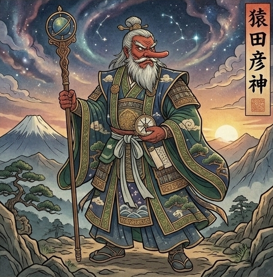
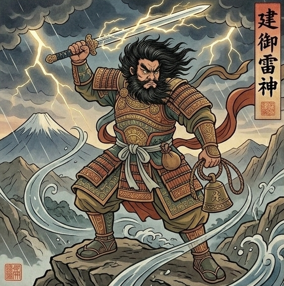
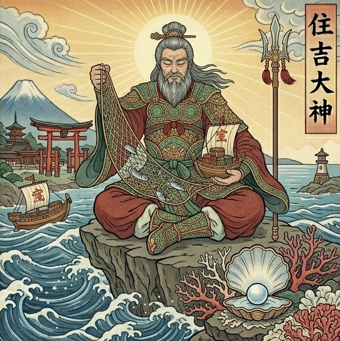
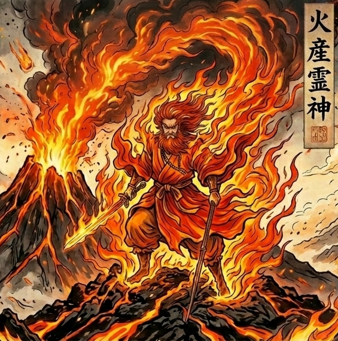
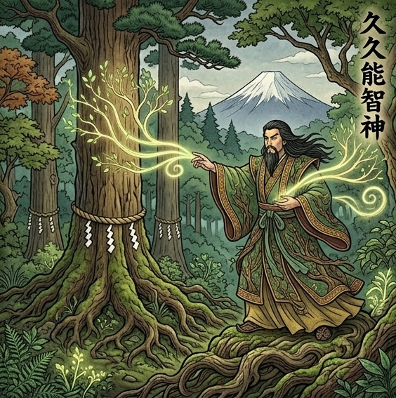

守護が届く人と、
届かない人のちがい
このたびは
ご感想をお寄せくださり
本当にありがとうございました。
いただいた言葉は
ひとつひとつ大切に読ませていただきます。
そのお礼として
ご感想をくださった方にだけ
このお手紙をお渡ししています。
鑑定でお伝えした守護神のことを
もう少し深くお話しします。
この国には
八百万の神々がいらっしゃいます。
あなたが生まれて
はじめて産声をあげたとき
いちばん近くにいてくださった神様。
それが、あなたの守護神です。
神様によって
守り方も、力の与え方もちがいます。
だからこそ、それを知る必要があるのです。
守護神は
名前を知って終わり、ではありません。
同じように守護神がついていても
その守りをしっかり受け取れている方と
受け取れずにいる方がいらっしゃいます。
そのちがいがどこにあるのか
私に視えていることを
このお手紙にまとめました。
深雪に視えているもの
霊視では、ご相談の内容だけでなく
あなたを守っている神様のことも視ています。
視えているのは
たとえば、こんなことです。
どの神様が守っているか
あなたの守護神がどの神様で
どんな守り方をする神様なのか。
守りが、今届いているか
同じ神様に守られていても
守りがしっかり届いているときと
届きにくくなっているときがあります。
今のあなたがどちらなのかが分かります。
守りが強くなる時期
守護神の力には
強まる時期と、弱まる時期があります。
動いたほうがいい時期と
待ったほうがいい時期が分かります。
相手の守護神との相性
パートナーや職場の人など
相手の守護神とあなたの守護神が
支え合う関係なのか
ぶつかりやすい関係なのかが分かります。
あなたが授かっている力
守護神から授かった、あなたの得意なこと。
それを知って使えるかどうかで
同じ出来事でも、結果が変わります。
守護神ごとの守り方
ここでは、私がこれまで視てきた中から
十柱の守護神をご紹介します。
ご自分の守護神のところだけでなく
大切な方を思い浮かべながら
読んでみてください。
※ここでご紹介するのは一部です。
これ以外の守護神に守られている方も
たくさんいらっしゃいます。
天照大御神

天の岩戸にお隠れになったとき
世界はすっかり闇に包まれました。
この神様がいるだけで
世界は明るくなるのです。
道を照らして守る神様です。
あなたが決めたことに
周りがついてきてくれます。
岩戸にこもるように
心を閉ざしてしまいます。
市杵嶋姫命

海の上に浮かぶ厳島にまつられる
宗像三女神のおひとり。
弁財天と重ねて祀られ
才と財をもたらす女神です。
才を輝かせて守る神様です。
人に届き、評価やお金に
つながっていきます。
人に譲ってばかりで
前に出られなくなります。
猿田彦命

天の神々が地上に降りるとき
分かれ道に立って光を放ち
その行く先を案内した神様です。
道をひらき、導いて守る神様です。
迷ったときに
進む道がすっと見えます。
どちらも選べないまま
立ち止まり続けてしまいます。
罔象女神

地の底から湧く清らかな水を司る女神。
いのちを育む水の神様として
古くから子宝や安産を願う人に
祀られてきました。
深く静かな知恵で
表には出ない本質を見抜きます。
人の心の奥を汲み取る力を授けて
守る神様です。
空気の変化に気づき
先回りして動けます。
自分の気持ちを
ずっと後ろに置いてしまいます。
建御雷神

剣を逆さに立て、その切っ先に座り
国を譲るよう交渉をまとめた
力強い神様です。
迷いを断ち切らせて守る神様です。
その決断が良い方へ転がります。
人とぶつかったり
ひとりで抱え込んだりします。
住吉大神

伊邪那岐命が海で禊をしたときに
生まれた三柱の神様。
古くから、海を渡る人を
守り続けてきました。
荒波を越える航路を守る神様です。
新しいことを始めたときも
追い風が吹きます。
港から出られず
同じ場所で足踏みします。
火産霊神

伊邪那美命から生まれた火の神様。
火は、ものを焼くだけでなく
暮らしを温め、新しいものを
生み出す力でもあります。
心に火を灯して守る神様です。
思いついたことを
次々と形にしていけます。
周りとぶつかったり
自分が燃え尽きたりします。
埴山姫神
伊邪那美命から生まれた土の女神。
器をつくる土、作物を育てる土を司り
すべてを受け止めて育てます。
土台を固めて守る神様です。
時間をかけたことが
しっかり実ります。
心が重くなり
動けなくなってしまいます。
豊受大神

伊勢の外宮にまつられ
天照大御神のお食事を司る女神。
暮らしのすべてを満たす恵みの神様です。
暮らしを満たして守る神様です。
心にもゆとりが生まれます。
気づけば自分の器が
空っぽになっています。
久久能智神

すべての木々に宿る神様。
地に深く根を張り
長い年月をかけて天へ伸びていきます。
根を張らせて守る神様です。
ゆっくりでも確かに伸びていきます。
根を張る前に動いて
何度もやり直すことになります。
読んでいて
「届きにくいとき」のほうに
心あたりがあった方も
いらっしゃるかもしれません。
それは、守護神が
離れてしまったわけではありません。
守護神はずっとそばにいます。
ただ、その守りが
あなたまで届きにくくなっているだけです。
守護が届く人と、
届かない人のちがい
同じように守護神がついているのに
なぜ、届く人と届かない人がいるのか。
これまで多くの方を霊視してきて
そのちがいは、はっきりしています。
守護神がいると知っている。
だから、迷ったときに
一人で背負いこまない。
全部を自分の力だけで
どうにかしようとする。
どう守ってくれる神様なのかを知り
その守り方に沿って動く。
そのまま真似して
自分には合わずに苦しくなる。
遠のくときは
無理をせず心を整える。
大きな決断をして
あとから悔やんでしまう。
手を合わせたり
心の中でお礼を伝えたりする。
あとは忘れてしまう。
四つのちがいを並べてみると
届く人がしていることは
どれも特別なことではありません。
ただ、守護神のことを
「知っている」かどうか。
どんな守り方の神様で
いつ守りが満ちて、いつ遠のくのか。
そこを知っているかどうかで
同じ人生でも、歩きやすさが変わります。
結びを太くする
日々のこと
最後に、今日からできることを
お伝えします。
近くの神社で、名前を伝える
遠くの大きな神社に
行かなければいけないわけではありません。
近所の小さなお社でも
手を合わせるときに
ご自分の名前と住んでいる場所を
心の中で伝えてください。
守護神は、その声を
ちゃんと受け取っています。
お願いより先に、お礼を
「こうなりますように」の前に
「いつも守ってくださって
ありがとうございます」と伝える。
それだけで
結びの糸はあたたかく光り始めます。
一人で抱え込まない
迷いや不安を
ひとりの胸の中だけで抱えていると
結びの糸は細くなっていきます。
苦しいときこそ
「私は一人で守っているわけではない」と
思い出してください。
朝の一分、守護神とつながる
- 朝起きたら、窓をあけるか
光の入る場所に立ちます。 - 目を閉じて、ゆっくり三回
鼻から吸って、口から吐きます。 - 吐く息といっしょに
胸のつかえが
体の外へ流れていくのを感じます。 - 自分の背中のうしろに
あたたかい気配があるのを
思い浮かべます。 - 心の中で
「今日もよろしくお願いします」と
伝えて、目を開けます。
このワークを続けていると
ふとしたときに
背中があたたかく感じたり
迷ったときに
すっと答えが浮かんだりします。
それが、守護が届いている合図です。
守護神との結びは
一度太くなれば
ずっとそのまま、ではありません。
季節が巡るたびに
人生の節目を迎えるたびに
太くなったり、細くなったりしています。
だからこそ
ときどき立ち止まって
今の結びを確かめることが
大切なのです。
あなたの守護神は
今日も、あなたのすぐそばにいます。
その守りが
あなたにまっすぐ届きますように。
ご縁に、心から感謝を込めて。